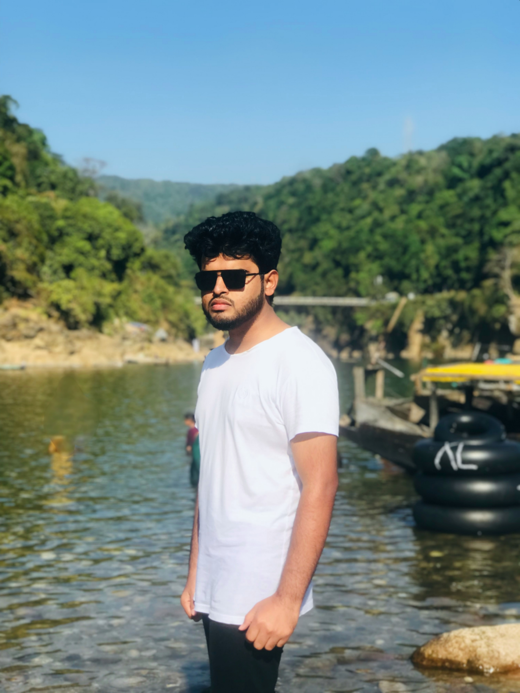

Welcome to my portfolio website <>SHAWKAT HOSSAIN MARUF</>
Owner & CEO, SH Cloud Burst Labs | Full-stack Web Developer | Desktop and Android App Developer

Brief Introduction
Hi! I am a 21-year-old student currently studying Computer Science and Engineering at Sejong University, pursuing my dream in technology. Since childhood, I have been passionate about computers, which led me to this field. I started learning programming and design on my own using online resources, and now I am a professional full-stack web and application developer with over four years of experience. View more >>